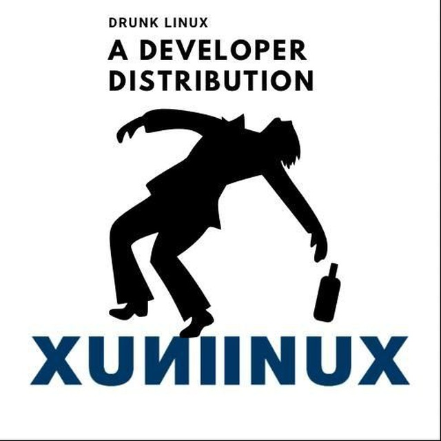

Home
Mirror
Download
Docs
Credits
News
Mirror
Downloads
Docs
Credits
News
Drunk Distro/Linux
An LFS Project

Here you can search for documentation, downloads and news
Downloads
Downloads
can be gotten here
Documentation
Documentation
can be seen here
Issues / Bugs
Bugs List
can be seen here